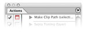
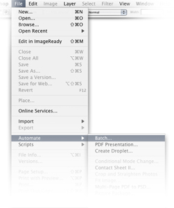

Silver Efex Pro supports Actions and Batch Processing, as well as Droplets.
All of the settings that were used when the filter was saved in the action will be applied when the Action, Batch Process, or Droplet is used.
To begin, create an Action with the filter that you wish to apply in the Action, Batch Process, or Droplet. To create an Action, follow these steps below:
- Open an existing file.
- Open the Actions palette within Photoshop. If the actions palette is not visible within Photoshop, navigate to the Window menu and select Actions.
- Click on the Create New Action button located in the bottom row of buttons of the Actions Palette.
- Name the Action according to the filter that you wish to apply as an Action, Batch Process, or Droplet, and click Record.
- Navigate to the Filters menu of Photoshop, and select the filter.
- Adjust the sliders and controls within the filter, and click OK.
- Stop the action by clicking on the Square button located in the bottom row of buttons of the Actions Palette.
To start a Batch Process of a folder of images, navigate to the File > Automate menu and select Batch. Before beginning this process, it is recommended that you create a new folder on your desktop labeled with the action name and the word "Processed." For Example: "Silver Efex Pro Processed." This folder will contain all of the images once the action has been applied to them.
To start the Batch Process, follow these steps:
- Ensure that the action that was created earlier is indicated in the Action pull-down menu. If the correct action is not indicated, click on the pull-down menu and select the correct action.
- Under Source, indicate Folder, and then click Choose. Navigate to the
folder that contains all of the images that you want to apply the
Batch Process to.
- Under Destination, select Folder. Click Choose and
navigate to the folder that was created on your desktop earlier.
For example, navigate to the "Silver Efex Pro Processed" folder.
- Click OK.
The Batch Process will now begin and apply the filter from the Action to all of the images in the folder, and save a new copy of the image with the filter applied to the folder that was created on the desktop.
Note: When batch processing with Silver Efex Pro, the filter effect is not applied to a separate layer. To apply Silver Efex Pro to a separate layer while recording the action, duplicate the layer prior to applying Silver Efex Pro. This ensures that the batch process includes a new filtered layer for each image.
Note: When batch processing with Silver Efex Pro, control points used in the initial filter settings will not be applied due to the location specific nature of control points. All other filter settings will be used in the action.